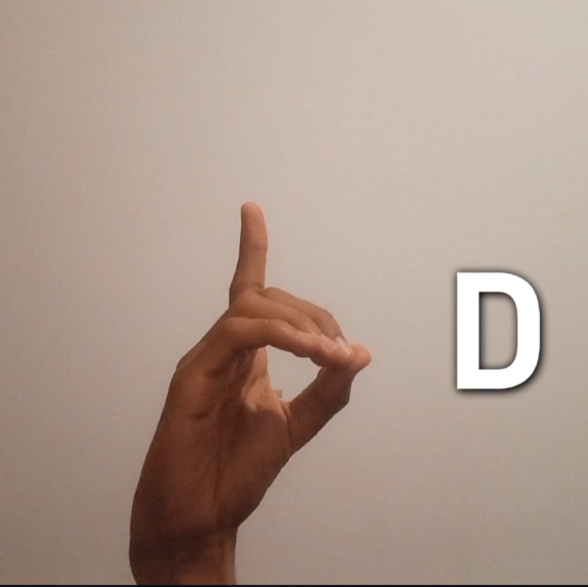

Alfabeto
Neste vídeo, você encontrará uma apresentação completa do alfabeto em Libras, a Língua Brasileira de Sinais. Cada letra é demonstrada em detalhes para facilitar o aprendizado e a prática da língua.
Letra A
A - Para fazer a Letra A em Libras, basta fechar a mão de forma com que as unhas dos dedos mínimo, anelar, médio e indicador fiquem para frente e o polegar no lado apontando para cima, assim como na imagem:
Letra B
B - Para fazer a Letra B em Libras, estique os dedos juntos e mantenha o polegar dobrado em frente à palma, de forma que os outros dedos fiquem retos e para cima, assim como na imagem:

Letra C
C - Para a Letra C em Libras, mantenha a mão aberta e curve todos os dedos para formar um 'C', como se estivesse segurando algo (para o 'Ç', é da mesma forma, porém balançando a mão para os lados), assim como na imagem:
Letra D
D - Para a Letra D, levante apenas o dedo indicador para cima, enquanto os demais dedos estão fechados. O polegar fica pressionado sobre os dedos fechados, assim como na imagem:
Letra E
E - Para fazer a Letra E, curve os dedos em direção à palma, mantendo-os juntos e apontando para baixo. O polegar fica dobrado em frente à palma, assim como na imagem:
Letra F
F - Na Letra F, una a ponta do polegar com a primeira dobra do dedo indicador, enquanto os outros dedos ficam esticados e separados para cima, assim como na imagem:

Letra G
G - Para a Letra G, estique o dedos indicador e polegar para cima, enquanto os outros dedos permanecem fechados, assim como na imagem:

Letra H
H - Na Letra H, estique o dedo indicador para cima e o dedo médio para frente, enquanto o polegar fica entre eles. A palma da mão deve estar voltada para o lado, assim como na imagem:

Letra I
I - Para fazer a Letra I, feche a mão e deixe apenas o dedo mínimo estendido, apontando para cima. O polegar deve ficar dobrado sobre os outros dedos, assim como na imagem:
Letra J
J - A Letra J começa com o dedo mínimo esticado e os outros dedos fechados. Movimente o dedo mínimo em um formato de arco, desenhando um 'J' no ar, assim como na imagem:
Letra K
K - Na Letra K, estique o dedo médio e o indicador para cima em formato de 'V', enquanto o polegar se apoia no meio deles, formando um 'K' com os dedos, assim como na imagem:

Letra L
L - Para fazer a Letra L, estique o dedo indicador para cima e o polegar para o lado, enquanto os outros dedos ficam dobrados, assim como na imagem:

Letra M
M - Para a Letra M, dobre os três dedos médios sobre o polegar e mantenha o dedo mínimo dobrado para formar um 'M' com os dedos, assim como na imagem:
Letra N
N - Para fazer a letra N em Libras, posicione a mão fechada com o dedo indicador e o médio estendidos e juntos, curvados sobre o polegar, e os demais dedos fechados, assim como na imagem:

Letra O
O - Para fazer a letra O em Libras, faça um círculo com todos os dedos da mão, de modo que eles toquem uns aos outros na ponta, formando a letra O, assim como na imagem:

Letra P
P - Para fazer a letra P em Libras, levante a mão com o dedo médio apontando para frente e o indicador apontando para cima, com o polegar apoiando o médio por baixo. Os demais dedos ficam dobrados, assim como na imagem:
Letra Q
Q - Para fazer a letra Q em Libras, aponte a mão para baixo, mantendo o indicador esticado e reto, enquanto o polegar o segura. Os demais dedos ficam dobrados, assim como na imagem:
Letra R
R - Para fazer a letra R em Libras, cruze o dedo médio sobre o indicador, mantendo-os retos e os outros dedos fechados, assim como na imagem:
Letra S
S - Para fazer a letra S em Libras, feche a mão completamente, de forma que o polegar fique dobrado sobre os outros dedos, assim como na imagem:

Letra T
T - Para fazer a letra T em Libras, feche a mão e coloque o polegar entre o indicador e o dedo médio, com os outros dedos fechados, assim como na imagem:
Letra U
U - Para fazer a letra U em Libras, levante o dedo indicador e o médio juntos, mantendo-os retos, enquanto os outros dedos estão fechados, assim como na imagem:

Letra V
V - Para fazer a letra V em Libras, levante o dedo indicador e o médio em formato de 'V', com os outros dedos fechados, assim como na imagem:
Letra W
W - Para fazer a letra W em Libras, levante o dedo indicador, médio e anelar abertos e juntos, formando a letra W, enquanto os outros dedos estão fechados, assim como na imagem:
Letra X
X - Para fazer a letra X em Libras, mantenha a mão fechada, mas levante o dedo indicador, dobrando-o para frente em forma de gancho. E mova ele para a mão para o lado, assim como na imagem:
Letra Y
Y - Para fazer a letra Y em Libras, levante o polegar e o dedo mínimo, deixando os outros dedos fechados, assim como na imagem:

Letra Z
Z - Para fazer a letra Z em Libras, trace um Z no ar com o dedo indicador esticado, enquanto os outros dedos estão fechados, assim como na imagem: